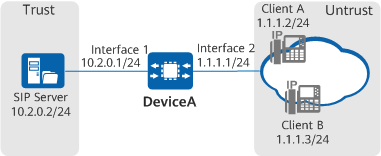

Example for Configuring SIP ALG
Networking Requirements
As shown in Figure 1, a SIP server is deployed on the enterprise intranet. When going online, each SIP client needs to send a register message to the SIP server. The register messages are carried through SIP.
DeviceA is deployed between SIP clients and the SIP server to perform NAT ALG on transmitted SIP messages.

In this example, interface1 and interface2 represent 10GE0/0/1 and 10GE0/0/2, respectively.

Item |
Data |
Description |
|---|---|---|
10GE0/0/1 |
IP address: 10.2.0.1 Security zone: Trust |
This interface is connected to the server and resides on the same network segment as the server. |
10GE0/0/2 |
IP address: 1.1.1.1 Security zone: Untrust |
This interface is connected to the clients and resides on the same network segment as the clients. |
SIP server |
10.2.0.2/24 |
Deploy the server in the DMZ. |
Configuration Roadmap
- Configure IP addresses for interfaces and add them to security zones, enabling network connectivity.
- Configure a security policy for communication between SIP clients and the SIP server.
- Configure destination NAT to enable the intranet SIP server to provide services for Internet users (public IP address: 1.1.1.10).
- Configure ALG to properly forward SIP messages.
Procedure
- Configure IP addresses for interfaces and add them to security zones.
<HUAWEI> system-view [HUAWEI] sysname DeviceA [DeviceA] interface 10ge 0/0/1 [DeviceA-10GE0/0/1] undo portswitch [DeviceA-10GE0/0/1] ip address 10.2.0.1 24 [DeviceA-10GE0/0/1] quit [DeviceA] interface 10ge 0/0/2 [DeviceA-10GE0/0/2] undo portswitch [DeviceA-10GE0/0/2] ip address 1.1.1.1 24 [DeviceA-10GE0/0/2] quit [DeviceA] firewall zone trust [DeviceA-zone-trust] add interface 10ge 0/0/1 [DeviceA-zone-trust] quit [DeviceA] firewall zone untrust [DeviceA-zone-untrust] add interface 10ge 0/0/2 [DeviceA-zone-untrust] quit
- Configure a security policy to allow the SIP clients to send messages to the SIP server.
[DeviceA] security-policy [DeviceA-policy-security] rule name policy_sec1 [DeviceA-policy-security-rule-policy_sec1] source-zone untrust [DeviceA-policy-security-rule-policy_sec1] destination-zone trust [DeviceA-policy-security-rule-policy_sec1] source-address 1.1.1.0 24 [DeviceA-policy-security-rule-policy_sec1] destination-address 10.2.0.2 32 [DeviceA-policy-security-rule-policy_sec1] service protocol tcp destination-port 5060 [DeviceA-policy-security-rule-policy_sec1] service protocol udp destination-port 5060 [DeviceA-policy-security-rule-policy_sec1] action permit [DeviceA-policy-security-rule-policy_sec1] quit
- Configure destination NAT to enable the intranet SIP server to provide services for Internet users.
[DeviceA] interface 10ge 0/0/2 [DeviceA-10GE0/0/2] undo portswitch [DeviceA-10GE0/0/2] nat enable [DeviceA-10GE0/0/2] quit [DeviceA] nat server policy_sip protocol tcp global 1.1.1.10 5060 inside 10.2.0.2 5060 [DeviceA] nat server policy_sip protocol udp global 1.1.1.10 5060 inside 10.2.0.2 5060
- Configure ALG to properly forward SIP messages.
[DeviceA] firewall detect sip
Verifying the Configuration
Client A and Client B are successfully registered with the server.
- Run the display session all command on DeviceA to check the session table.
<DeviceA> display session all Session Table Information: Protocol : 17(UDP) SrcAddr Port Vpn : 1.1.1.2 2107 DestAddr Port Vpn : 1.1.1.10 5060 Time To Live : 60s NAT Info New SrcAddr : - New SrcPort : - New DestAddr : 10.2.0.2 New DestPort : 5060 Protocol : 17(UDP) SrcAddr Port Vpn : 1.1.1.3 4936 DestAddr Port Vpn : 1.1.1.10 5060 Time To Live : 60s NAT Info New SrcAddr : - New SrcPort : - New DestAddr : 10.2.0.2 New DestPort : 5060 Total : 2
Configuration Script
The following lists only the scripts related to this configuration example.
# sysname DeviceA # interface 10GE0/0/1 ip address 10.2.0.1 255.255.255.0 # interface 10GE0/0/2 ip address 1.1.1.1 255.255.255.0 nat enable # firewall zone trust set priority 85 add interface 10GE0/0/1 # firewall zone untrust set priority 5 add interface 10GE0/0/2 # firewall detect sip # security-policy rule name policy_sec1 source-zone untrust destination-zone trust source-address 1.1.1.0 mask 255.255.255.0 destination-address 10.2.0.2 mask 255.255.255.255 service protocol tcp destination-port 5060 service protocol udp destination-port 5060 action permit # nat server policy_sip protocol tcp global 1.1.1.10 5060 inside 10.2.0.2 5060 nat server policy_sip protocol udp global 1.1.1.10 5060 inside 10.2.0.2 5060 # return